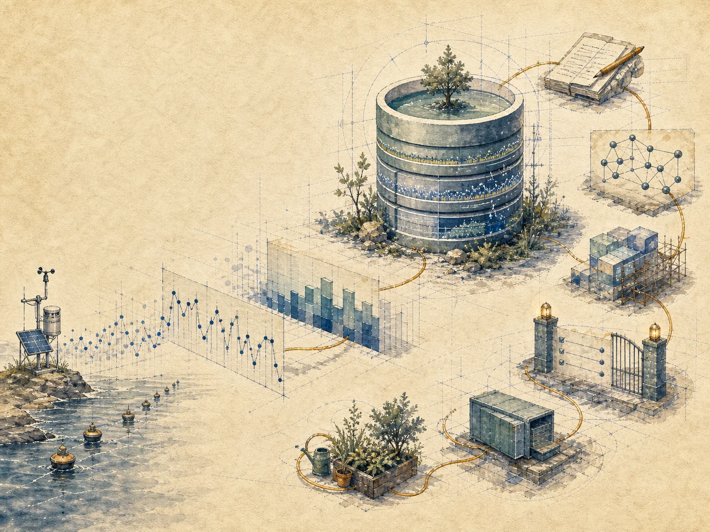
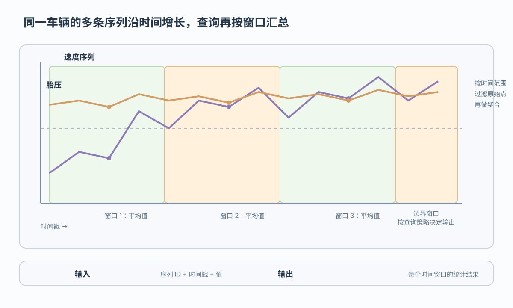

点写入 Point
表示单个速度点补报或实时上报

时序数据库围绕时间写入和窗口查询组织数据
 VER. 2608.3
Built with impress.js
VER. 2608.3
Built with impress.js
完成本节后，你应该能够
实体与指标形成序列，窗口查询再把连续点转成统计结果

tsid 是序列身份，timestamp 是数据点的时间坐标
01
02
03
04
05
06<tsid, <time, value>*>
LFV5001.speed
(10:00, 62.0) (10:01, 63.5)
LFV5001.pressure
(10:00, 2.4) (10:05, 2.5)逻辑上按事件时间组织观测；到达顺序可能不同
Point、Record、Tablet 是三种抽象写入类型，具体产品的接口可能不同
表示单个速度点补报或实时上报
表示同一实体同一时刻写入速度与胎压
表示一条序列批量上传一段时间的数据
批量通常减少调用次数；实际存储收益取决于系统实现
先问返回原始点、一个统计值，还是每个固定窗口的统计值
| 查询或操作 | 返回 | 例子 | 主要边界 |
|---|---|---|---|
| 时间范围 | 指定区间的原始点 | 过去 24 小时的速度点 | 只限制时间区间 |
| 整体聚合 | 一个或少数统计值 | 过去 24 小时平均速度 | 聚合整个范围 |
| 窗口聚合 | 每个固定窗口的统计值 | 每 1 小时一个平均值 | 结果保留窗口边界 |
| 降采样 | 降低时间分辨率的窗口结果 | 每分钟平均速度用于长期趋势 | 通常保留窗口边界 |
| 多序列汇聚 | 按时间语义组合结果 | 速度与胎压对比 | 需要先处理对齐 |
过去 24 小时平均速度与过去 24 小时每分钟平均速度是两种不同结果
不同采样频率和缺失时间点会改变对齐结果与成本
JOIN on timestamp 只用于类比关系操作；具体系统的多序列对齐不一定执行字面 SQL JOIN
事件时间决定数据属于哪个位置；到达时间反映系统何时看到它
采样频率不同、时间点缺失或重采样都会增加对齐成本
数据区保存序列值，索引区先缩小需要读取的数据范围
| 结构 | 保存内容 | 访问作用 |
|---|---|---|
| Chunk Group | 相关序列的 Chunk | 按实体和时间组织协同读取 |
| Chunk | 一条序列的一段数据 | 连续时间访问 |
| Page | 一小段序列值与编码数据 | 最小读取单元 |
| 元数据索引 | 时间范围与数据位置 | 先定位相关 Chunk Group 或 Chunk |
列式组织与时序编码压缩通常减少存储量和读取量；向量化可以批量处理值
长期时序数据还会形成冷热管理压力，近期数据与历史数据需要不同存储策略
时间范围和值范围帮助排除无关页面，但是否能直接汇总取决于覆盖条件
时间范围和值范围主要用于定位和过滤；SUM 与点数只有在页面完整覆盖且聚合适用时才可能直接支持平均值
统计信息帮助剪枝，压缩帮助降低存储与读取成本，二者不是同一件事
事件时间决定数据属于哪个窗口，到达时间决定系统何时看到它
以 IoTDB 为代表的实现可以采用这种组织方式；其他时序数据库的结构可能不同
迟到数据可能修正已经显示的窗口结果
实时结果可能因迟到数据修正；分片、路由和副本会进一步影响跨节点查询
时序系统的专用优化来自持续观测和时间访问，不是因为表里出现 timestamp
实体、指标、tsid、事件时间和值组成持续观测流
Point、Record、Tablet 对应上报形态；范围、整体聚合与窗口降采样对应访问任务
不同采样频率需要时间语义；迟到数据可能改变已显示结果
TsFile、统计剪枝与顺序／乱序组织服务时间访问；冷热管理仍是背景压力
序列模型 → 写入与查询 → 对齐与迟到 → 文件层次与存储取舍